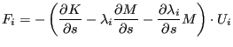

|
Keyword type: model definition
This option may be used to specify a local axis system X'-Y'-Z' to be used for defining material properties. For now, rectangular and cylindrical systems can be defined, triggered by the parameter SYSTEM=RECTANGULAR (default) and SYSTEM=CYLINDRICAL.
A rectangular system is defined by specifying a point a on the local X' axis and a point b belonging to the X'-Y' plane but not on the X' axis. A right hand system is assumed (Figure 174).
|
When using a cylindrical system two points a and b on the axis must be given. The X' axis is in radial direction, the Z' axis in axial direction from point a to point b, and Y' is in tangential direction such that X'-Y'-Z' is a right hand system (Figure 175).
|  |
Instead of listing the coordinates of points a and b explicitly on the line underneath *ORIENTATION, the user can specify a distribution defined by a *DISTRIBUTION card.
The parameter NAME, specifying a name for the orientation so that it can be used in an element property definition (e.g. *SOLID SECTION) is required (maximum 80 characters).
Notice that a shell ALWAYS induces a local element coordinate system, independent of whether an *ORIENTATION applies or not. For details the user is referred to Section 6.2.14.
For rectangular systems an additional rotation about one of the local axes can be specified on the second line underneath the *ORIENTATION card.
First line:
Example: *ORIENTATION,NAME=OR1,SYSTEM=CYLINDRICAL 0.,0.,0.,1.,0.,0.
defines a cylindrical coordinate system with name OR1 and axis through the points (0.,0.,0.) and (1.,0.,0.). Thus, the x-axis in the global coordinate system is the axial direction in the cylindrical system.
Example files: beampo2.